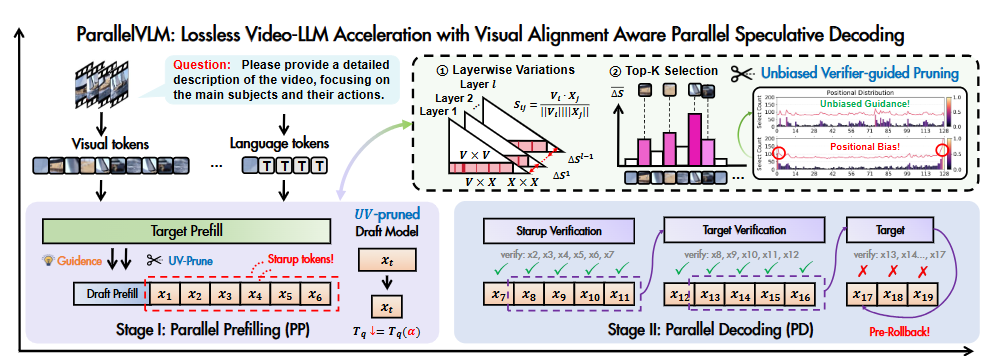
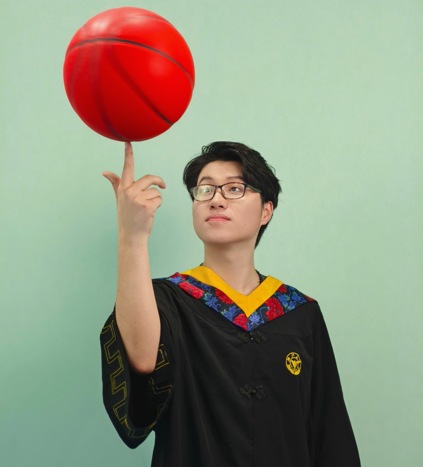
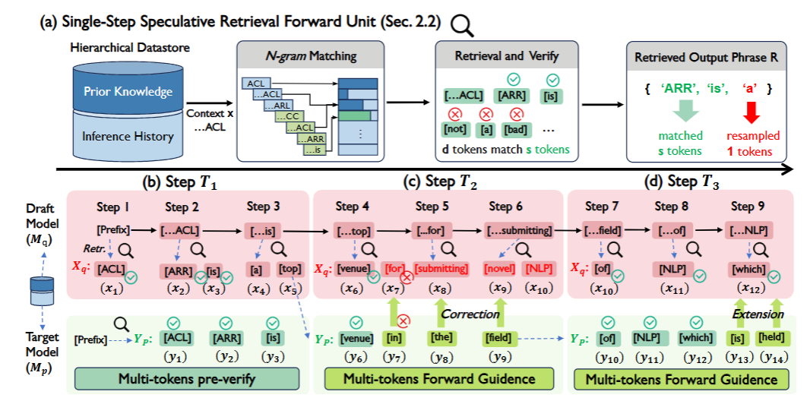
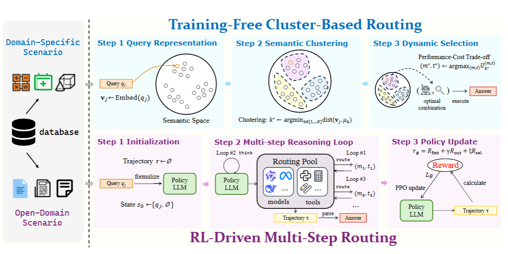
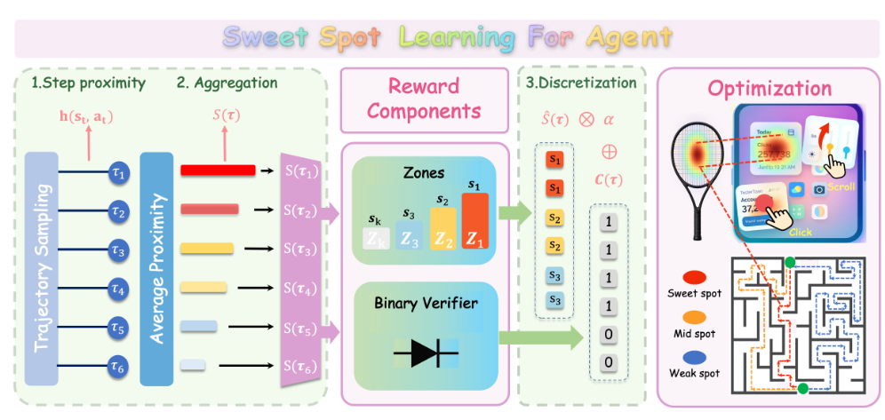
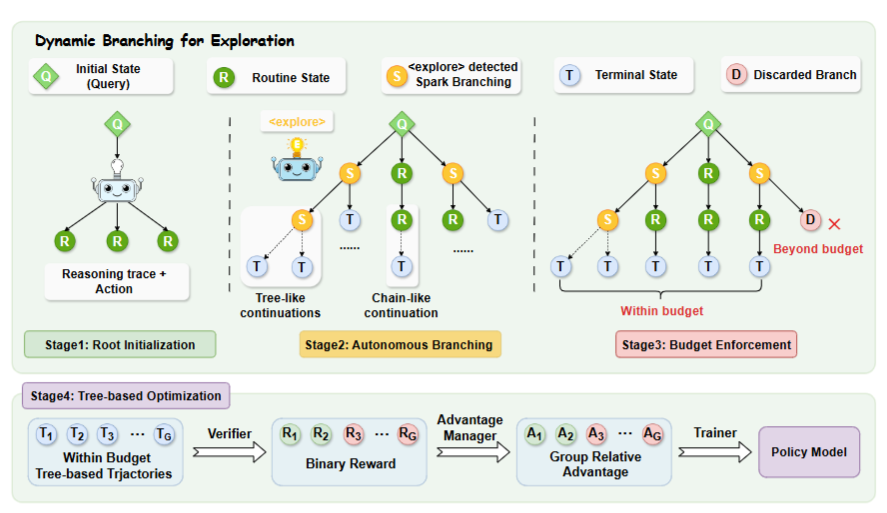
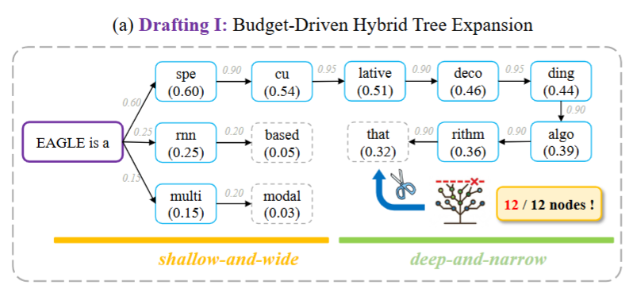
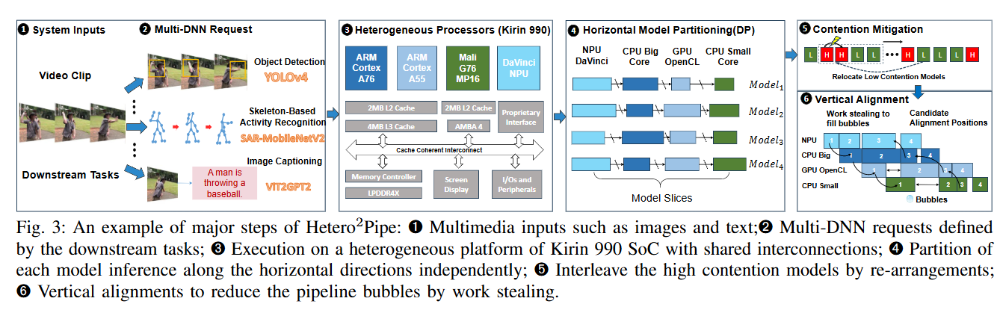
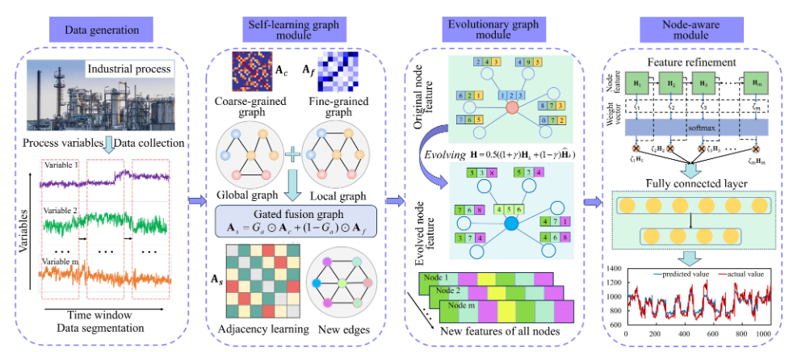
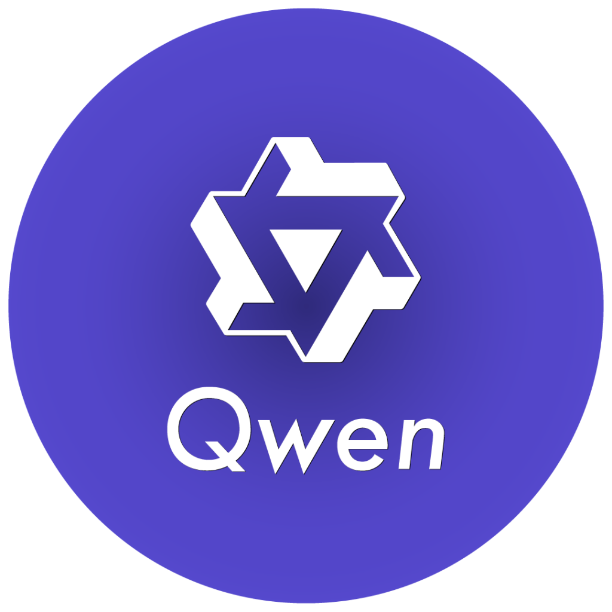

ParallelVLM: Lossless Video-LLM Acceleration with Visual Alignment Aware Parallel Speculative Decoding
IEEE/CVF Conference on Computer Vision and Pattern Recognition (CVPR), 2026

Hey, I'm Yuhao Shen, a direct PhD student at the College of Control Science and Engineering, Zhejiang University, advised by Prof. Cong Wang. I also received my B.E. degree from Zhejiang University.
My research lies in MLSys, LLM Inference, AI Infrastructure, and Edge Computing. Over the past two years, I have been deeply engaged in the field of speculative sampling and decoding. Outside academia, I enjoy playing basketball, video games, and photography.

|
Zhejiang University, Hangzhou, China Direct Ph.D. in Control Science and Engineering, 2024 - 2029 Advisor: Cong Wang |
|
|
Zhejiang University, Hangzhou, China Bachelor of Engineering in Control Science and Engineering, 2020 - 2024 Advisor: Cong Wang |

IEEE/CVF Conference on Computer Vision and Pattern Recognition (CVPR), 2026

arXiv (2026)


arXiv (2026)


arXiv (2026)


IEEE 45th International Conference on Distributed Computing Systems (ICDCS), 2025

IEEE Transactions on Neural Networks and Learning Systems, 2024
|
 |
Research Intern, Qwen Business Group Nov. 2025 - Present Advisor: Ye Shuang, Jun Dai, Lei Chen Shanghai, China |